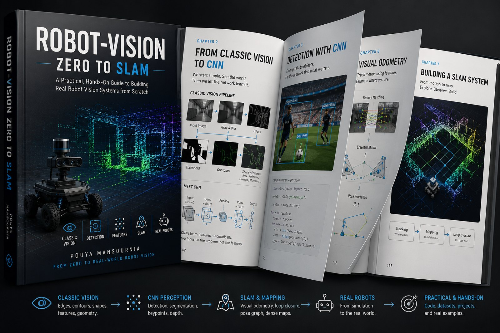

This book walks you, step by step, from "what actually is a digital image?" to a real robotics vision system. It follows the same path a computer vision engineer does: pixels, filters, edges, features, camera geometry, YOLO object detection, deep learning, and finally SLAM and ROS 2 on a real robot. این کتاب شما را قدمبهقدم، از «اصلاً تصویر دیجیتال چیست؟» به یک سیستم بینایی واقعی رباتیک میبرد؛ همان مسیری که یک مهندس بینایی ماشین طی میکند: پیکسل، فیلتر، لبه، ویژگی، هندسه دوربین، تشخیص اشیا با YOLO، یادگیری عمیق، و در نهایت SLAM و ROS 2 روی یک ربات واقعی.

Each dot is one chapter. The path is linear. Every chapter builds on the last one.هر نقطه یک فصل است. مسیر خطی است. هر فصل روی مفاهیم فصل قبل بنا میشود.
A photo, to a computer, is nothing but a matrix of numbers. We build and manipulate that matrix with NumPy.یک عکس از نگاه کامپیوتر چیزی نیست جز یک ماتریس عدد. با NumPy این ماتریس را میسازیم و دستکاری میکنیم.
Installing OpenCV, reading and showing images, cropping and rotating, drawing shapes, and live webcam video.نصب OpenCV، خواندن و نمایش تصویر، برش و چرخش، رسم شکل و گرفتن ویدیوی زنده از وبکم.
Convolution, Gaussian blur, thresholding, histograms, and morphology. Fast, lightweight tools that predate deep learning.Convolution، بلور گاوسی، آستانهگذاری، هیستوگرام و مورفولوژی؛ ابزارهای سریع و سبک قبل از دیپلرنینگ.
From image gradients to the Canny algorithm and contour extraction, and how a computer finds an object's boundary.از گرادیان تصویر تا الگوریتم Canny و استخراج Contour؛ چطور کامپیوتر مرز یک شیء را پیدا میکند.
Harris corners, ORB, and matching features across two photos. This is the foundation of panoramas, Visual Odometry, and SLAM.Harris Corner، ORB و تطبیق ویژگی بین دو عکس؛ پایهی Panorama، Visual Odometry و SLAM.
The pinhole model, the camera matrix, calibration, and stereo vision, which extracts real depth from a flat photo.مدل Pinhole، ماتریس دوربین، کالیبراسیون و دید استریو؛ چطور از یک عکس دوبعدی عمق واقعی استخراج میشود.
IoU and NMS, building a dataset and labels, ready-made datasets like COCO, and a full tour of the YOLO family up to YOLO26.IoU و NMS، ساخت دیتاست و Label، دیتاستهای آماده مثل COCO، و آشنایی کامل با نسخههای YOLO تا YOLO26.
How a CNN learns its own filters, pixel-by-pixel segmentation, and transfer learning.CNN چطور خودش بهترین فیلترها را یاد میگیرد، Segmentation پیکسلبهپیکسل، و Transfer Learning.
Visual Odometry, Optical Flow, Visual SLAM, and Sensor Fusion with a Kalman Filter. Where is the robot, really?Visual Odometry، Optical Flow، Visual SLAM و Sensor Fusion با فیلتر کالمن. ربات کجاست؟
The camera as a Node and Topic in ROS 2, and the latency/FPS engineering behind a truly real-time system.دوربین بهعنوان Node و Topic در ROS 2، و مهندسی Latency/FPS برای یک سیستم واقعاً Real-Time.
Each chapter builds on the last; start at Chapter 1 even if you already know Python.هر فصل روی فصل قبل بنا میشود؛ از فصل ۱ شروع کن، حتی اگر با پایتون آشنایی داری.
Every chapter has "Try It Yourself" boxes. Copy the code, run it, see the output.هر فصل جعبههای «امتحانش کن» دارد؛ کد را کپی کن، اجرا کن، خروجی را ببین.
Technical terms are always footnoted to the glossary at the end of that same chapter.اصطلاحهای تخصصی همیشه با پانوشت به واژهنامه انتهای همان فصل وصلاند.